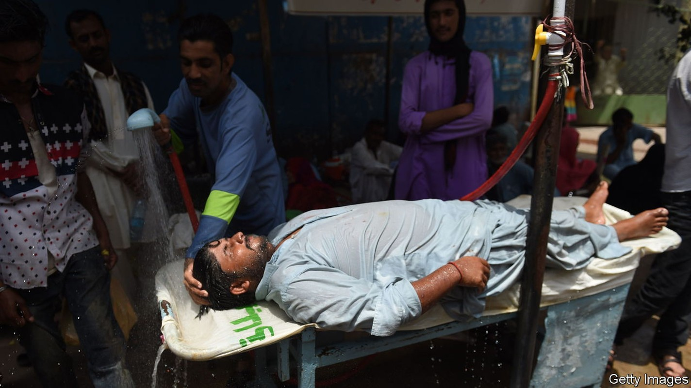
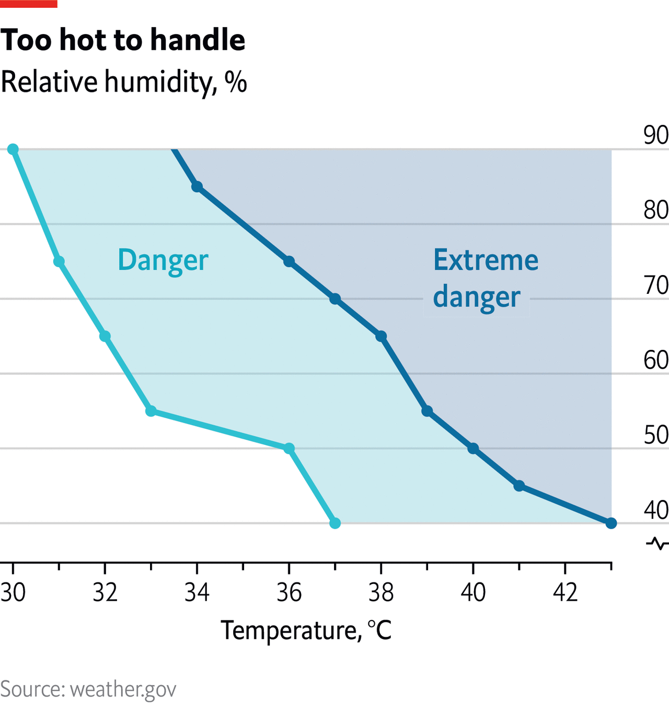

The increasing frequency of fatal wet-bulb temperatures
Unbearable levels of heat and humidity pose an ever greater problem

WHEN A DEADLY heatwave hits India’s northern plains, some 20m people are killed by persistent “wet-bulb” temperatures of more than 35°C (95°F). That is the plot of “The Ministry For the Future”, Kim Stanley Robinson’s novel about climate change. The scenario is fiction but similar temperatures have been briefly recorded in the real world. And as the globe warms they will become more common.
The wet-bulb temperature is that which would be recorded by a thermometer wrapped in a moist towel. Water evaporating from around the bulb has a cooling effect. The wetter the surrounding air, the less moisture is able to escape and the higher the wet-bulb reading will be. It will always be lower than the actual temperature, until the air is completely saturated with moisture vapour.
Warm-blooded animals need to keep their internal temperatures reasonably constant. If it is too hot, most use some form of evaporative cooling to do this—functioning, in essence, as living wet-bulbs. Dogs pant, pigs wallow in mud and humans sweat. Ambient humidity changes how efficient these processes are, which is why muggy Singapore would feel much hotter than dry Sydney at the same ambient temperature.
A wet-bulb temperature of 35°C is regarded as the theoretical limit of what humans can endure. It would be reached at an actual temperature of 45°C if relative humidity were 50%, or at about 39°C if humidity were 75%. Beyond this point it becomes impossible for sweat to cool the body down, causing people to overheat and in effect cook. Cells swell, proteins are deformed and organ systems fail, resulting in death. At wet-bulb temperatures above 35°C, it is thought that even young healthy people wearing light clothing—regardless of whether they are parked in front of a fan, in the shade or have unlimited water to drink—will die in about six hours.
Such extremes of heat and humidity are not common. But in 2020 researchers from the California Institute of Technology, Columbia University and Loughborough University found that a handful of weather stations—in South Asia, the Persian Gulf and the southwest coast of North America—have occasionally recorded wet-bulb temperatures close to or above 35°C between 1979 and 2017, though only for a couple of hours at a time. They also concluded that these types of temperatures are probably reached more often, but not all instances are recorded.

Even slightly lower wet-bulb temperatures can be dangerous. At a wet-bulb temperature of 32°C, it is risky to do anything that raises body temperature, such as walking or working outside. That level was reached in Chennai, India, on May 1st. The United States National Weather Service considers wet-bulb temperatures of around 31°C to constitute “extreme danger”. For the elderly or people with medical conditions, the threshold is still lower. Two heatwaves in India and Pakistan in the summer of 2015, with brief wet-bulb highs of 30°C, killed around 4,000 people. The heat dome in America’s Pacific north-west in 2021 killed around 200 people at a wet-bulb of about 25°C.
Average global temperatures are currently 1.1-1.3°C warmer than pre-industrial levels. The same team of American and British researchers found that extreme levels of humidity and heat now occur twice as often than they did in 1979. Even if countries stick to their promises to curb emissions and scrub carbon from the atmosphere, the world is on track for temperatures to rise by the same amount again by the end of the century.
Humans’ ability to regulate their temperature—through sweating, clothing, housing and more—has allowed them to live, and thrive, in almost every environment on Earth, from tundras to deserts. In modern times technology, such as air-conditioning, does what the body cannot. It will continue to perform that role. But parts of the world will nevertheless get harder and harder to bear.